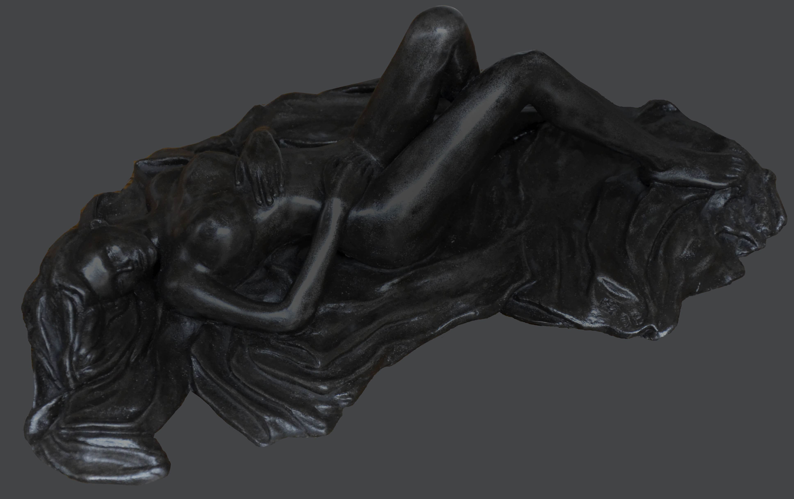

Nuit Noire
- Technique
- Sculpture
- Année
- 2012
- Disponibilité
- Disponible
« Nuit Noire » est une œuvre d’Annick Bouvattier, réalisée en 2012 (sculpture). Cette œuvre est disponible.
“Nuit Noire” is a work by Annick Bouvattier, created in 2012 (sculpture). This work is available.
«Nuit Noire» es una obra de Annick Bouvattier, realizada en 2012 (escultura). Esta obra está disponible.
«Nuit Noire» è un'opera di Annick Bouvattier, realizzata nel 2012 (scultura). Quest'opera è disponibile.
Demander des informations